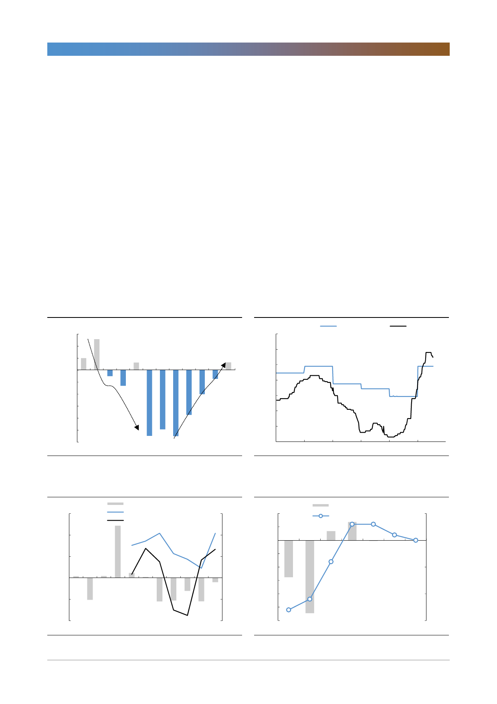

고려아연(010130)
낮아진 아연 제련수수료와 깊어지는 고민
중국 spot TC에 따른 수익 변동을 알아보기에 앞서 아연 산업의 현황을 살펴보
자. 2018년부터 아연 광산의 가동이 본격화됨에 따라 정광 공급이 늘어나면서 중
국 spot TC는 같은 해 3월부터 상승하기 시작했다. 이에 따라 우리는 글로벌 아
연 공급이 해소되는 시기인 2022년까지는 TC가 지속적으로 상승할 것으로 예한
바 있다. 그러나 중국 spot TC가 지난 6월 28일부터 하락세로 전환되면서 이러
한 구조에 대한 의구심이 생기기 시작했다.
아연 정광 공급 증가가 제련수수료 상승으로 이어지기 위해서는 아연 정광 공급
량이 제련량을 상회해야 한다는 전제조건이 필요하다. 최근 글로벌 아연 정광 공
급량과 제련량의 방향성은 5월에 달라졌다. 아연 제련량이 정광 공급량을 상회하
면서 제련수수료가 하락 전환한 것이다. 최근의 중국 spot TC를 고려할 때, 7월
까지 제련량이 정광 공급량을 상회했을 것으로 전망한다.
그렇다면 향후 TC는 어떤 방향으로 움직일까? 중국의 상황을 살펴보자.
[그림 3] 아연 정광 수급 밸런스: 공급 부족 2022년에 해소 [그림 4] 아연 제련수수료, 6월말 이후 하락세로 전환
(천톤)
600
400
200
0
(200)
(400)
(600)
(800)
(1,000)
(1,200)
아연 공급부족
아연 광산 우위
아연 공급확대
아연 제련소 우위
11 12 13 14 15 16 17 18 19F 20F 21F 22F
자료: Mining Technology, 한국투자증권
(달러/톤)
350
300
250
200
150
100
50
0
2014
2015
자료: WIND, 한국투자증권
Benchmark TC
spot TC
6월 21일 기준 290달러/톤
6월 28일 기준 280달러/톤
7월 05일 기준 280달러/톤
7월 12일 기준 275달러/톤
7월 19일 기준 275달러/톤
2016 2017 2018 2019
[그림 5] 아연 정광 공급량 증가는 제련수수료 상승 요인
(십만톤)
15
정광공급량-제련량(좌)
벤치마크 T/C(우)
中 spot T/C(우 Y+1)
(달러/톤)
300
10
240
5
180
0
120
(5)
60
아연 정광 공급량 < 아연 제련량
(10)
0
09 10 11 12 13 14 15 16 17 18 19
자료: WIND, 한국투자증권
[그림 6] 제련량의 증가는 제련수수료 하락으로 반영
(천톤)
40
20
0
(20)
(55.2) (108.9)
(40)
(60)
정광공급량-제련량(좌)
中 spot T/C(우)
(달러/톤)
300
13.7 27.4
(1.0)
275
아연제련량이 정광 공급량을 상회
- 제련수수료 하락으로 반영
250
(80)
225
(100)
아연 정광 공급량 < 아연 제련량
(120)
200
19.01 19.02 19.03 19.04 19.05 19.06 19.07
자료: WIND, 한국투자증권
3